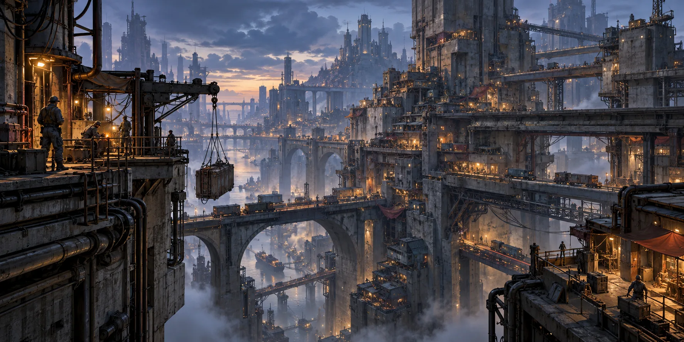
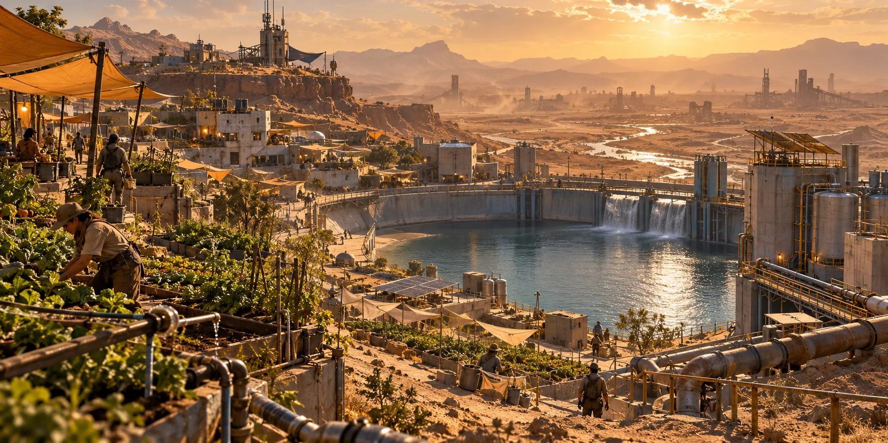
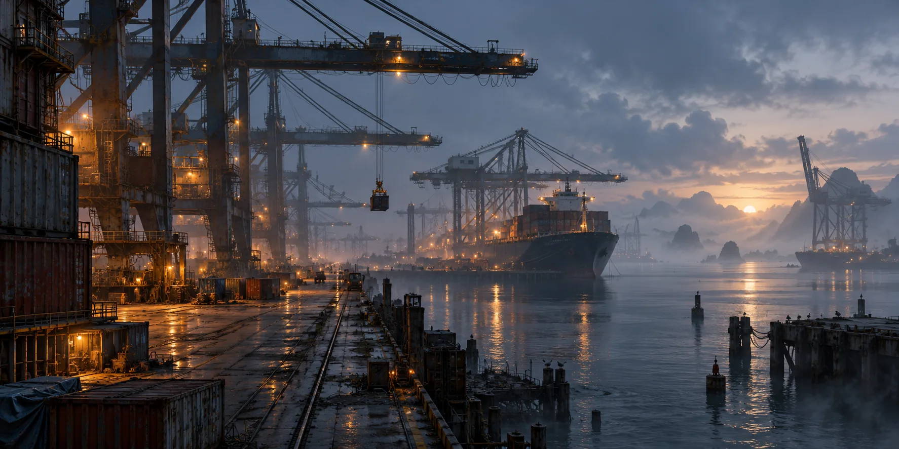
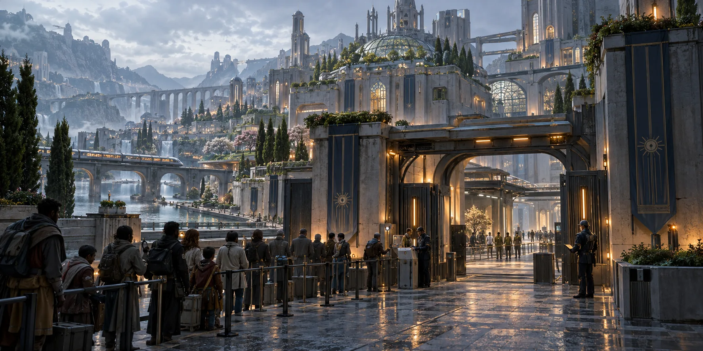
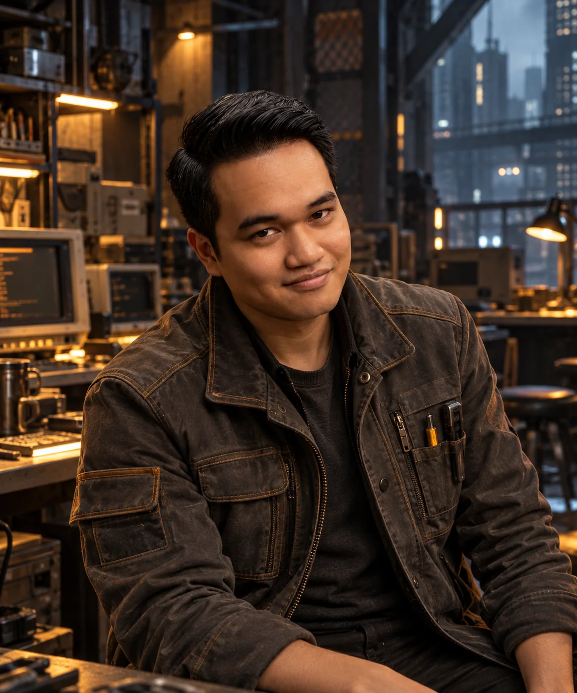
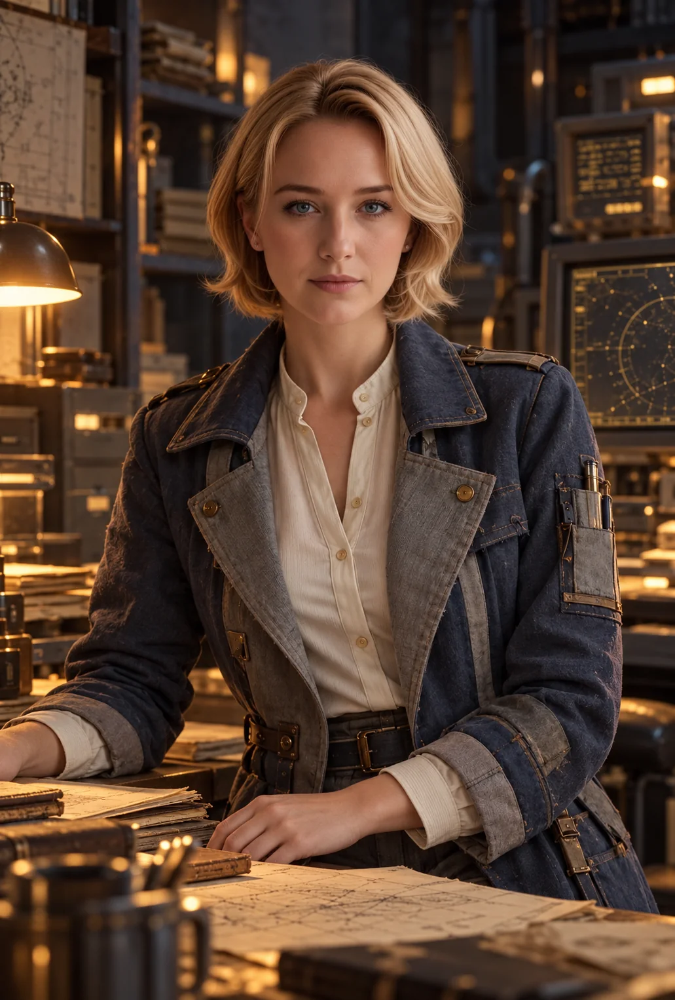
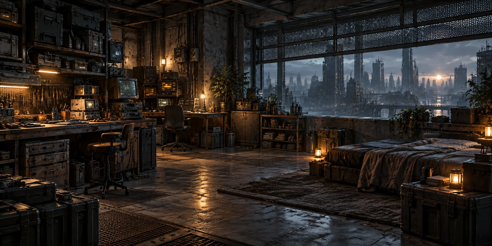

01
โลกหลังยุคแห่งแสงสว่าง
ปี 2189 มนุษยชาติยังมีมหานคร โรงไฟฟ้า AI ดาวเทียม และโรงงานที่แม่นยำอย่างน่าอัศจรรย์ สิ่งที่สูญหายคือความสามารถในการทำให้เทคโนโลยีทุกส่วนทำงานร่วมกันอย่างยั่งยืน
เมืองหนึ่งอาจมีระบบแพทย์อัตโนมัติรักษาโรคซับซ้อนได้ ขณะที่เมืองข้างกันหาอะไหล่ปั๊มน้ำไม่ได้ ความก้าวหน้าและความขาดแคลนจึงอยู่ติดกันเสมอ
ความเสื่อมของโลกไม่ได้เริ่มจากหายนะครั้งเดียว แต่เกิดจากวิกฤตหลายอย่างซ้อนกัน และจากการแก้ปัญหาเฉพาะหน้าที่สร้างปัญหาใหม่ตามมา โลกยังมีพื้นที่ที่สะอาด ปลอดภัย และน่าอยู่ ผู้คนจึงยังมีอนาคตที่อยากรักษาไว้
02
ประวัติศาสตร์ 5 ยุค
ลำดับนี้เป็นภาพรวมของจักรวาล แต่ละพื้นที่อาจผ่านวิกฤตต่างเวลากัน และบันทึกประวัติศาสตร์อาจขัดแย้งกันเอง
2040–2075
The Great Integration · ยุคแห่งการเชื่อมต่อ
AI เชื่อมพลังงาน การขนส่ง เกษตรกรรม การเงิน และโครงสร้างพื้นฐานเข้าด้วยกัน เมืองมีประสิทธิภาพสูงขึ้น แต่ระบบต่าง ๆ พึ่งพากันมากเกินไป
2076–2102
The Convergence Crisis · วิกฤตการณ์ซ้อนทับ
คลื่นความร้อน น้ำท่วม การขาดแคลนวัตถุดิบ และความขัดแย้งทางการเมืองเกิดพร้อมกัน ไม่มีภัยใดทำลายโลกเพียงลำพัง แต่การฟื้นตัวเริ่มตามไม่ทัน
2103–2136
The Great Disconnect · ยุคขาดตอน
โรงงานและดาวเทียมบางส่วนยังทำงาน แต่เครือข่ายควบคุม วัสดุเฉพาะ และอะไหล่ไม่มั่นคง รัฐและเมืองลดขอบเขตบริการลงสู่ระดับที่ตนดูแลได้
2137–2170
The Age of Holding · ยุคแห่งการประคอง
ผู้คนซ่อมมากกว่าซื้อใหม่ รื้ออาคารเพื่อเอาวัสดุกลับมาใช้ และตั้งชุมชนรอบน้ำกับไฟฟ้าที่เชื่อถือได้ ช่างและผู้ดูแลระบบกลายเป็นกำลังสำคัญ
2171–2189
The Afterlight Era · ยุคหลังแสง
เมืองรุ่นใหม่เติบโตจากเศษซากของโลกเก่า บางแห่งมั่นคง บางแห่งถูกผูกขาดโดยผู้ควบคุมน้ำ พลังงาน และข้อมูล คนรุ่นใหม่ไม่รู้จักโลกก่อนวิกฤต
03
กฎของโลก
พลังงานคือความต่อเนื่องของชีวิตเมืองต้องจัดลำดับไฟให้ระบบน้ำ โรงพยาบาล การสื่อสาร และที่อยู่อาศัย
สิ่งที่ซ่อมได้มีค่ากว่าสิ่งที่ใหม่กว่าอุปกรณ์เก่าที่ซ่อมด้วยอะไหล่ท้องถิ่นอาจมีค่ากว่าของล้ำสมัยที่ต้องนำเข้า
เครือข่ายไม่ได้ครอบคลุมทุกที่ข้อมูลข้ามเมืองได้ แต่ความเร็วและความน่าเชื่อถือไม่แน่นอน วิทยุและเอกสารยังจำเป็น
ข้อมูลไม่เท่ากับความรู้ที่ใช้ได้AI รู้วิธีรักษาโรคก็ยังช่วยไม่ได้เต็มที่ หากไม่มีเซนเซอร์ เวชภัณฑ์ หรือช่างซ่อม
ทรัพยากรกำหนดภูมิศาสตร์ของอำนาจผู้มีน้ำสะอาด พลังงาน และอาหารที่มั่นคง ย่อมมีอำนาจต่อรองเหนือผู้อื่น
ชุมชนเป็นโครงสร้างพื้นฐานความไว้วางใจระหว่างช่าง แพทย์ คนขับรถ และผู้ดูแลคลังอาหารช่วยให้เมืองอยู่รอด
โลกไม่ได้สิ้นหวังเท่ากันทุกแห่งยังมีโรงเรียน เมืองที่ปลอดภัย และผู้คนที่สร้างชีวิตที่มีความสุขได้จริง
04
ภูมิภาคและอารยธรรม
Afterlight ไม่มีเมืองหลวงเดียวที่กำหนดชะตาทุกคน การเดินทางข้ามพื้นที่จึงเหมือนการย้ายไปสู่อีกโลกหนึ่ง

01 / MegacityTHE STACKS
มหานครซ้อนชั้น
อาคารหลายยุคต่อเติมทับกัน ถนนกลายเป็นทางเดินเหนือหลังคา ชั้นล่างเต็มไปด้วยท่อ โรงซ่อม และเส้นทางขนส่งเก่า
จุดแข็งแรงงาน ช่าง ตลาดขนาดใหญ่
จุดเปราะบางมลพิษ สาธารณูปโภค ความเหลื่อมล้ำ

02 / InlandTHE DRY BELT
แนวเขตแห้งแล้ง
เขตเกษตรและอุตสาหกรรมเดิมที่ปรับตัวกับสภาพอากาศ ชุมชนตั้งรอบอ่างเก็บน้ำ โรงไฟฟ้า และแหล่งอาหาร
จุดแข็งความรู้ท้องถิ่นและการพึ่งพาตัวเอง
จุดเปราะบางภัยแล้ง อะไหล่ และการแย่งชิงน้ำ

03 / CoastTHE QUIET PORTS
ท่าเรือที่เงียบงัน
ศูนย์ขนส่งเก่าที่ระบบอัตโนมัติบางส่วนยังทำตามคำสั่งเมื่อหลายสิบปีก่อน คลังสินค้าอาจรายงานว่ามีของที่หายไปแล้ว
จุดแข็งอะไหล่ วัสดุ และข้อมูลเก่า
จุดเปราะบางระบบรักษาความปลอดภัยที่ผิดพลาด

04 / EnclaveTHE CONTINUITY CITIES
เมืองที่ยังดำเนินต่อไป
เมืองที่รักษาไฟฟ้า น้ำ การศึกษา และการแพทย์ไว้ได้ดี แต่จำกัดการเข้าถึงเพื่อรักษาเสถียรภาพ
จุดแข็งคุณภาพชีวิตและการบริหารที่มั่นคง
จุดเปราะบางการพึ่งพาภายนอกและการกีดกันคนนอก
ไม่มีภูมิภาคใดเป็นฝ่ายดีหรือฝ่ายร้ายโดยอัตโนมัติ เมืองที่มั่งคั่งอาจดูแลประชาชนดีแต่ไม่รับผู้ลี้ภัย ส่วนชุมชนยากจนบางแห่งอาจเปิดรับคนแปลกหน้าแต่รับประกันความปลอดภัยไม่ได้
05
เทคโนโลยีที่กระจายไม่เท่ากัน
ระดับเทคโนโลยีวัดจากความสามารถในการผลิต ซ่อมบำรุง และหาแหล่งทรัพยากร มากกว่าอายุหรือความล้ำของอุปกรณ์
| ระดับ | เงื่อนไข | ตัวอย่าง |
|---|
Tier I
Local | ชุมชนสร้างและซ่อมเองได้ | เครื่องกรองน้ำ วิทยุ เครื่องวัดไฟ |
Tier II
Industrial | ต้องพึ่งโรงงานเฉพาะทาง | ขนส่งอัตโนมัติ เครื่องจักร CNC |
Tier III
Advanced | ต้องใช้ห่วงโซ่อุปทานซับซ้อน | หุ่นยนต์แพทย์ ชิปเฉพาะทาง AI ขั้นสูง |
Tier IV
Legacy | ของก่อนวิกฤตที่ยังมีศักยภาพสูง แต่ผลิตซ้ำหรือหาอะไหล่ยาก | ศูนย์คำนวณเก่า ดาวเทียม ระบบควบคุมโครงสร้างพื้นฐาน |
Tier IV ไม่ได้เหนือกว่า Tier III ทุกด้าน คุณค่าของมันอยู่ที่ความสามารถเฉพาะและความยากในการทดแทน
คำตอบอาจยังอยู่ในฐานข้อมูลของ AI แต่เมืองอาจไม่มีเซนเซอร์หรือวัสดุที่จะนำคำตอบนั้นไปใช้ นี่คือความขัดแย้งที่ขับเคลื่อนโลกนี้
06
เศรษฐกิจและอำนาจ
เมืองใหญ่ยังมีเงินดิจิทัลและธนาคาร ชุมชนเล็กอาจใช้เงินสด เครดิตแรงงาน หรือสัญญาแลกเปลี่ยน มูลค่าของสิ่งหนึ่งขึ้นกับว่ามันทำให้ชีวิตดำเนินต่อไปได้เพียงใด
น้ำสะอาดสิทธิการเข้าถึงและผู้ควบคุมระบบกรองน้ำเป็นฐานอำนาจสำคัญ
อะไหล่เฉพาะทางชิ้นส่วนเล็กชิ้นเดียวอาจทำให้โรงพยาบาลหรือโรงงานกลับมาทำงาน
อาหารเมืองที่ผลิตอาหารได้เองต่อรองกับเมืองอื่นได้มากกว่า
ความรู้ที่ใช้ได้จริงคู่มือซ่อมและคนที่ถ่ายทอดทักษะได้อาจมีค่ากว่าเครื่องประดับราคาแพง
ตลาดมืดบางแห่งเป็นช่องทางเดียวที่โรงพยาบาลเล็กจะหาอะไหล่ได้ ขณะเดียวกัน การผูกขาดทรัพยากรก็ใช้ควบคุมผู้คนได้เช่นกัน
07
ผู้คนและวัฒนธรรม
คนส่วนใหญ่ยังต้องทำงาน เลี้ยงลูก เรียนหนังสือ ซ่อมบ้าน และหาเวลาพักผ่อน โลกนี้จึงไม่ได้มีแต่ผู้รอดชีวิตเดินผ่านซากเมือง
The Keepersผู้รักษาระบบ
วิศวกร ช่างซ่อม และผู้ดูแลโครงสร้างพื้นฐานที่ทุกฝ่ายต้องการ บางคนรักษาอารยธรรม บางคนเพียงอยากให้คืนนี้ไฟที่บ้านไม่ดับ
The Reclaimersผู้คืนชีวิตให้ของเก่า
นักสำรวจ พ่อค้าอะไหล่ และนักดัดแปลง ผู้ค้นหาประโยชน์จากสิ่งที่คนอื่นมองว่าไร้ค่า
The Neighborsคนธรรมดา
ครู พ่อค้า พยาบาล เด็ก และครอบครัวที่พยายามสร้างชีวิตปกติ พวกเขาคือเหตุผลที่การรักษาเมืองยังมีความหมาย
The Archivistsผู้รักษาความทรงจำ
ผู้เก็บแผนที่ หนังสือ เสียง และบันทึกจากก่อนวิกฤต เมื่อข้อมูลออนไลน์หายได้ สื่อออฟไลน์จึงมีค่ามหาศาล
บางเมืองถือว่าการปิดไฟเป็นมารยาทพื้นฐาน บางชุมชนฉลองทุกครั้งที่โรงไฟฟ้าผ่านฤดูพายุ ความอบอุ่นอยู่ในกิจวัตรเล็ก ๆ เหล่านี้
08
ตัวละคร
พอลและนาตาลีคือสองตัวละครที่ทำให้โลก Afterlight มีความหมายส่วนตัว นอกเหนือจากประวัติศาสตร์ เมือง และระบบที่กำลังเสื่อมถอย

เจ้าของเดอะฮอลโลว์พอล
พอลมีฐานลับส่วนตัวซึ่งใช้ทำงาน พักฟื้น และเฝ้ามองความเปลี่ยนแปลงของเมืองจากพื้นที่ที่เขาควบคุมได้
ภาพลักษณ์: เสื้อแจ็กเก็ตใช้งานจริงสีเทาเข้ม ผ้าที่ผ่านการใช้งาน กระเป๋าเครื่องมือ และรายละเอียดสีอำพัน

ตัวละครสำคัญของเรื่องนาตาลี
นาตาลีผูกโยงกับพอลและแนวคิดเรื่องโลกที่เธอสร้างให้เขา ความหมายของการสร้างโลกนั้นยังเปิดให้เรื่องราวขยายต่อ
ภาพลักษณ์: เสื้อคลุมฟ้าเทาที่ใช้งานได้จริง ทับเสื้อสีงาช้าง พร้อมรายละเอียดซ่อมแซมอย่างประณีต
สถานะของเรื่อง: พอลเป็นเจ้าของเดอะฮอลโลว์ ส่วนบทบาทของนาตาลีในฐานะผู้สร้างโลกให้พอลยังเป็นประเด็นที่ต้องกำหนดให้ชัดในเนื้อเรื่อง
09
ภาษาภาพของ Afterlight
อารยธรรมที่เก่า หนัก และยังทำงานต่อ ทั้งที่ควรหยุดไปนานแล้ว
Infrastructure Grey#343B40
Atmospheric Blue#66747A
Utility Amber#C17B45
Archive Ivory#D4D0C5
- คอนกรีตเก่า เหล็กที่ซ่อมหลายครั้ง และสายไฟที่มีหน้าที่จริง
- ให้โครงสร้างพื้นฐานเด่นกว่าชุดแฟชั่นล้ำยุค
- ใช้แสงนีออนเฉพาะจุด และแสดงความก้าวหน้าผ่านรายละเอียดเล็ก ๆ
- ฉากอบอุ่นมีโคมไฟ โต๊ะไม้ อาหารร้อน และหน้าต่างที่กันฝนได้จริง
สัญลักษณ์ประจำจักรวาล: วงแหวนขาดหนึ่งช่วงและมีแสงสีอำพันตรงรอยขาด วงแหวนคือระบบที่เคยเชื่อมทุกอย่าง ช่องว่างคือสิ่งที่สูญหาย แสงคือสิ่งที่ยังทำงานอยู่
10
เดอะฮอลโลว์
ฐานลับส่วนตัว · จักรวาลอาฟเตอร์ไลต์
เดอะฮอลโลว์เป็นฐานลับส่วนตัวของพอล ซ่อนอยู่ในโครงสร้างพื้นฐานที่ถูกลืมของมหานครซึ่งกำลังเสื่อมสภาพ

ภาพตีความบรรยากาศภายใน · ผังจริงของฐานยังไม่เปิดเผยสถานที่แห่งนี้ไม่ปรากฏในแผนที่สาธารณะหรือทะเบียนเมืองทั่วไป เดิมเป็นโครงสร้างอุตสาหกรรมร้างที่ได้รับการดัดแปลงให้เป็นที่พักพิงซึ่งพึ่งพาตนเองได้ ภายในมีพื้นที่ทำงานส่วนตัว อุปกรณ์คอมพิวเตอร์ยุคเก่า ระบบไฟฟ้าสำรอง ระบบสื่อสาร และเสบียงจำเป็น
ต่างจากย่านที่แออัดภายนอก เดอะฮอลโลว์เปิดโอกาสให้พอลได้ทำงาน พักฟื้น และเฝ้ามองโลกที่เปลี่ยนไปจากสภาพแวดล้อมซึ่งเขาควบคุมได้
ตำแหน่งที่แท้จริง ผังภายใน และขีดความสามารถทั้งหมดของฐานยังไม่เปิดเผย
ที่ตั้งไม่เปิดเผย · ภายในจักรวาลอาฟเตอร์ไลต์
“ในโลกที่ไม่อาจรับประกันความมั่นคงได้ บางสถานที่ต้องเป็นของเราเอง”
11
แกนเรื่องที่ขับโลกนี้
IKeeping Things Alive · เรื่องเล็ก
ซ่อมไฟ หาอะไหล่ให้โรงพยาบาล และช่วยชุมชนผ่านฤดูพายุ
IIThe Missing Link · เรื่องระดับเมือง
ค้นหาว่าทำไมเมืองที่เคยพึ่งพากันจึงขาดการติดต่อ และระบบใดเชื่อมพวกเขากลับมาได้
IIIWhat Really Happened · เรื่องระดับประวัติศาสตร์
เปิดเผยการตัดสินใจที่สมเหตุสมผลในอดีต แต่ส่งผลเสียที่ไม่มีใครรับผิดชอบ
IVA Different Future · เรื่องระดับอารยธรรม
จะสร้างระบบใหญ่ที่มีประสิทธิภาพสูงขึ้นอีกครั้ง หรือเครือข่ายเมืองเล็กที่ยืดหยุ่นและเป็นอิสระกว่า?
คำถามหัวใจ: มนุษย์จะสร้างอนาคตที่ดีกว่าได้หรือไม่ โดยไม่ทำผิดพลาดแบบเดิมซ้ำอีก?
12
เรื่องที่ควรกำหนดต่อ
ส่วนนี้เป็นข้อเสนอในการพัฒนา ไม่ใช่ข้อเท็จจริงที่ยืนยันแล้วในจักรวาล
Open questionของล้ำยุคอยู่รอดมาอย่างไร?
กำหนดแหล่งผลิต เส้นทางอะไหล่ และสิ่งที่ผลิตทดแทนไม่ได้ เพื่อให้เทคโนโลยีในปี 2189 มีต้นทุนที่ชัดเจน
Open questionใครมีสิทธิ์ตัดสินใจ?
ระบุขนาดประชากร ผู้ดูแลน้ำ ไฟ และอาหาร รวมถึงวิธีที่ประชาชนตรวจสอบหรือเปลี่ยนผู้มีอำนาจ
Open questionนาตาลีกับพอลอยู่ระดับใดของเรื่อง?
แยกให้ชัดว่า “นาตาลีสร้างโลกให้พอล” เป็นความจริงในเนื้อเรื่อง หรือเป็นกรอบการเล่าและความหมายเชิงอารมณ์
Story seedอะไหล่ชิ้นสุดท้าย
โรงพยาบาลใน The Stacks ต้องใช้อะไหล่จาก Quiet Ports ก่อนระบบไฟสำรองหมด แต่ชิ้นนั้นถูกกันไว้ให้ Continuity City ตามสัญญาเก่า
World Bible ฉบับอ่านออนไลน์ · ภาพประกอบสร้างใหม่ตามบรรยากาศของจักรวาล · เนื้อหาที่ระบุไว้แยกจากข้อเสนอเพื่อพัฒนาต่อ